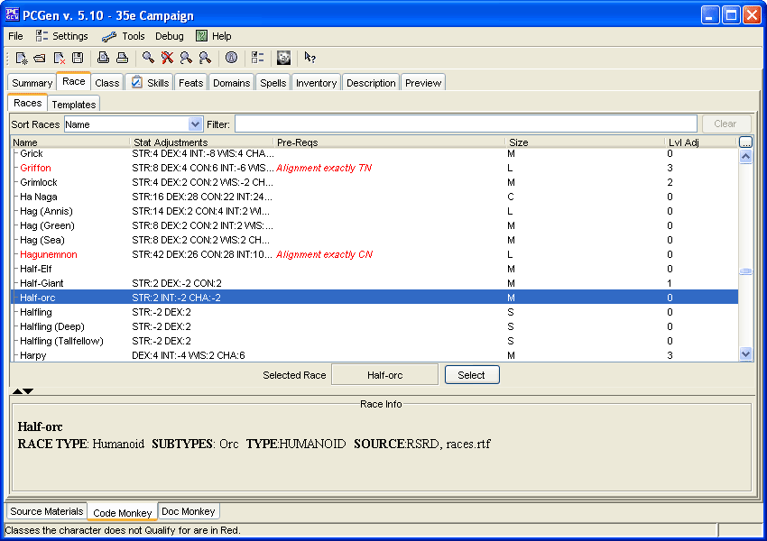
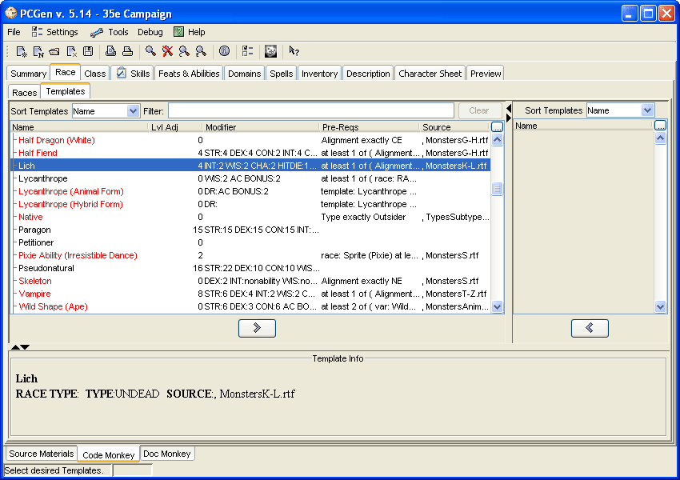

Main Tab: Race

The Race tab is where you select your race (you can only have 1!), and where
you can pick any templates that apply to your character. It is divided into
two sub-tabs: Races and Templates.
Sub-Tab: Races
Sort Races (Drop Down Menu) - There are 3 ways you can categorize the Races:
- Name - No hierarchy
- Type - The Types of races are the top-level, with races of that type
being listed in it)
- Source - as in books that were loaded in the Source Material tab
Selected Race (Information Reporting) - This indicates what Race you've selected. It will
display <none selected> if no race has been selected.
Select (Button) - To select a race, you can double-click on it, or you can click on it and
then click on the Select button.
Upper Left Frame (Tree Window) - This table lists the available races.;
- You can filter what races are listed by clicking on the filter icon (the
magnifying glass icon in the toolbar) or by typing text into the Filter field.
- The table will display various attributes of the races
- You can sort by those columns by clicking on the column header.
- Races which you don't qualify for will be shaded with the pre-requisite failure color (default is red).
- In the Pre-Reqs column the pre-requisites for the race (if any) will be listed, with any pre-reqs that
you don't meet being shown in the pre-requisites failure color.
Race Info Frame (Information Reporting) - This displays the details of the race you last
clicked on.

Sub-Tab: Templates
Available Templates (Left Frame) - This table lists details about the templates
which are currently available in the sources you loaded.
- Templates are generally meant to handle "permanent" adjustments, not situational
ones.
- Some users have created templates to handle situational
modifiers (like Rage) in order to produce a character sheet with the adjustments for that
template calculated into the character.
- To add a template click on one you qualify for
(Templates for which the PC does not pass the prerequisites for are displayed in red)
and then click on the right-arrow button.
Selected Templates (Right Frame) - This table lists all the templates the character
currently has, including whether or not the character can voluntarily remove the template or
not. Removable templates can be removed by clicking on them and then clicking on the left-arrow
button.